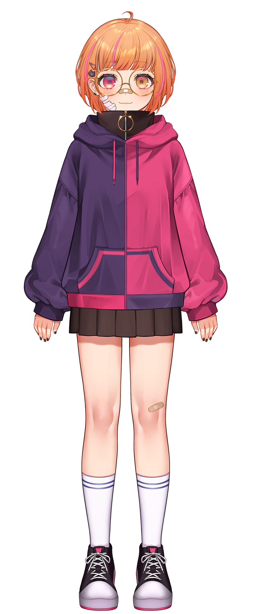

In English, please
País:
Chile
Cumpleaños:
28 de Agosto
Altura:
1,65 m
Comida favorita:
Donas y sushi
Comida que detestas:
Mariscos
Videojuego favorito:
Pokémon Soul Silver
Serie favorita:
Bojack Horseman
Gustos musicales:
K-pop / J-pop / Pop
Anime favorito:
Mob Psycho 100
Signo Zodiacal:
Virgo
Animal favorito:
Gatos
Color favorito:
Morado/Lila
Modelo:
Amane Uta (Artista y rigger)
Hashtag:
#Connillust